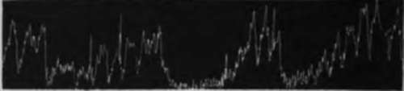
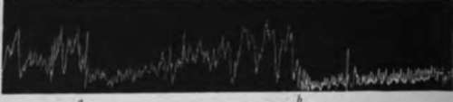
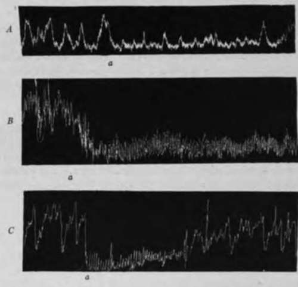

IV. Inhibitory Reflexes From The Intestinal Mucosa To The Empty Stomach
Description
This section is from the book "The Control Of Hunger In Health And Disease", by Anton Julius Carlson. Also available from Amazon: The Control of Hunger in Health and Disease.
IV. Inhibitory Reflexes From The Intestinal Mucosa To The Empty Stomach
We have seen that the tonus and contractions of the empty stomach are temporarily inhibited by stimulation of nerves in the mouth, in the esophagus, and in the gastric mucosa itself. Can the tonus and hunger contractions of the empty stomach be influenced reflexly by stimulation of the intestinal mucosa ? The answer to this question might explain the diminution or abolition of hunger by the introduction of chyme into the intestine. If such reflex relations exist, it is obvious that the intestinal mucosa must be an important factor in the control of the gastric tonus and hunger mechanism.
Boldyreff reports that acids in the intestine inhibit the periodic activity of the empty stomach. The inhibition was not obtained by water or alkaline solutions. In fact, Boldyreff appears to imply that the periodic contractions of the empty stomach may be initiated by the introduction of a solution of 0.3 per cent NaaC03 into the intestine. He therefore concludes that the reflex inhibition is due to an acid stimulation of nerves in the intestinal mucosa.
«
If chemical stimulation of the intestinal mucosa induces increased intestinal tonus and contractions, we should expect the increased motility of the intestines to cause some inhibition both of the digestion peristalsis and the hunger contractions of the stomach according to the interesting theory of gastero-intestinal co-ordination recently advanced by Alvarez.
In our work we used 24 young female dogs. Intestinal fistulas were made by Abbfe's lateral anastomosis in the first loop of the small intestine below the pancreas, the cephalad end being sutured into the abdominal wall and left open to the exterior. The gastric fistula was made after recovery from the first operation.
In another group of dogs a Tiery fistula was made, but no gastric fistula, the recording apparatus being introduced into the stomach through the esophagus.
In the third group the gastric fistula was made near the pyloric end of the stomach. Through this fistula a small stomach tube was passed through the pylorus into the small intestine for varying distances. This tube was kept in the gut throughout the experiment for the introduction of the liquids into the intestine. The recording balloon was passed into the stomach either through the gastric fistula or through the esophagus.
In the last group of dogs the vagi and splanchnic nerves were cut, and after recovery from the operation, gastric fistula was established in the antrum pylori. In all tests on this group the fluids were introduced into the intestine by means of a tube passed through the pylorus, and the stomach balloon was passed down through the esophagus.
The following solutions were introduced into the intestine in 10 c.c. quantities, in most cases at body temperature: normal gastric juice (dog and man); 10 per cent Witte's peptone in 0.2 per cent HCl; pepsin in 0.2 per cent HCl; hydrochloric acid (0.1 per cent to 0.5 per cent); saturated H2C03 solution; neutral olive oil; fresh milk; water; mechanical stimulation of the intestinal mucosa (glass rod or rubber tube).
Fig. 23.-Tracings of the empty stomach of ilogs. A, a, mechanical stimulation of intestinal mucosa (gently moving a rubber tube in the lumen); b, 10c.c. water introduced into the intestine; c, 10 c.c. of 0.3 per cent NajCOj introduced into the intestines; B, a, 10 c.c. of 10 per cent peptone in 0.2 per cent HCl introduced into intestine; b, 10 c.c. fresh milk introduced into the intestine; showing temporary inhibition of tonus and hunger contractions of the empty stomach by mechanical and chemical stimulation of the intestinal mucosa.
When the vagi and splanchnic nerves are intact all mechanical and chemical stimulations of the intestinal mucosa cause inhibition of the gastric tonus and hunger contractions. The effect of a purely mechanical stimulation (rubbing the mucosa with a glass rod or rubber tube) is the most transitory. In general pure gastric juice and the 0.5 per cent HCl cause the longest inhibition. The acid peptone solution followed these closely. The weaker acids produced inhibition of less duration. Saturated carbonic acid solution did not give quite so distinct an inhibition as the other acids. Inhibition with pure gastric juice and the acid peptone mixture varied in duration from 3 to 20 minutes, depending apparently largely on the condition of the animal at the time. The sodium carbonate solution caused inhibition of less duration than acid mixtures, but of longer duration than the water or the neutral mixtures in general. However, the longest inhibition obtained in any one experiment was produced by 10 c.c. of milk in the gut. In this case the inhibition lasted 30 minutes. Ordinarily neutral solutions produced a longer inhibition than the mechanical stimulation by moving the soft rubber tube in the intestinal fistula.
Fig. 24.-Tracing showing tonus and hunger contractions of the empty stomach of dogs. A, to c.c. of gastric juice introduced into small intestine at a; B, 10 c.c. 0.5 per cent HCl introduced into small intestine at a; C, 10 c.c. 1 per cent Na,CCJ, Introduced into small intestine at a; showing reflex inhibition of the tonus an<f the hunger contractions of the empty stomach by chemical stimulation of intestinal mucosa.
In the animals with the vagi and splanchnic nerves severed the substances named above still caused reflex inhibition of the empty stomach from the intestinal mucosa, but the latent period of the inhibition was greatly prolonged, the degree of the inhibition less, and the duration of it much shorter than in the normal animals.
It is therefore clear that this inhibition of the tonus and mechanical stimulation of the intestinal mucosa involve both long or central and short or local reflex paths, a situation similar to that found in the gastric mucosa itself.
We may conclude, then, that: (1) Gastric juice, chyme, acids, alkalies, water, milk, and oil introduced into the small intestine inhibit gastric hunger contractions and gastric tonus for varying periods. (2) This inhibition is due partly to mechanical, partly to chemical, stimulation of the intestinal mucosa. The chemical stimulation produces the greatest effect. (3) This inhibition takes place primarily by the "long" or central reflex path, but "short" or local reflex paths in Auerbach's plexus are also involved (Elsesser).
The precise rdle of these reflexes in the control of the gastric hunger mechanism in the normal animal must be determined by further investigation. They are probably factors in the diminution or absence of hunger in cases of enteritis, intestinal obstruction, constipation, appendicitis, and gallstones.
Continue to:
- prev: III. Inhibitory Reflexes From The Gastric Mucosa In Dogs And Other Animals. Continued
- Table of Contents
- next: Chapter XII. The Nervous Control Of The Hunger Mechanism. I. Inhibition Of Hunger By Smoking And By Pressure On The Abdomen